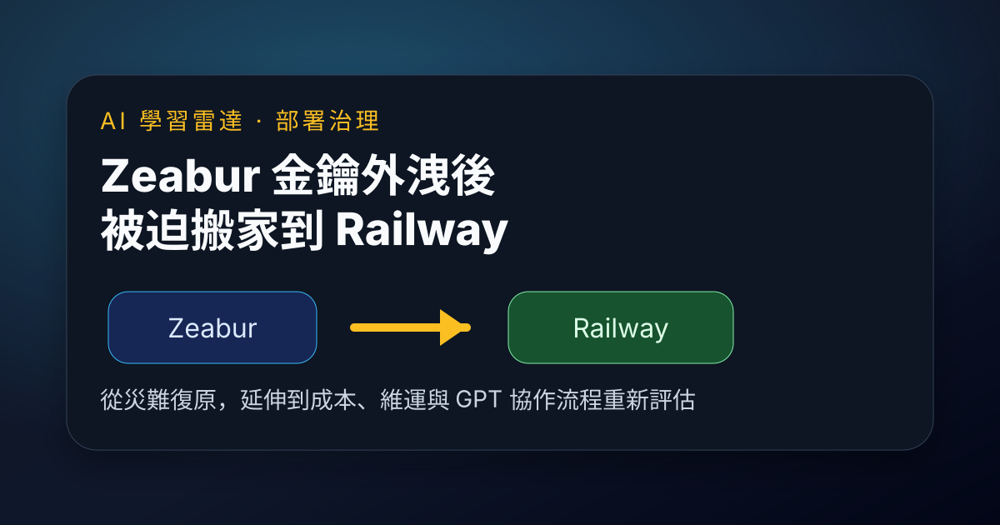

Threads｜Harold 哈洛：Zeabur 金鑰外洩後被迫搬家到 Railway，反而重估部署成本與 GPT 協作維運

一句話摘要
Zeabur 金鑰外洩事件讓部分使用者啟動「撤離與重部署」；Harold 哈洛分享自己把服務搬到 Railway.com 後，意外發現成本、部署流程與 GPT 協作維運都更順手，從一次資安補救轉成重新選型的契機。
來源脈絡
- 來源：Harold 哈洛（@yuwinjhan）在 Threads 的分享。
- 連結：https://www.threads.com/@yuwinjhan/post/DcoXagIk36o
- Threads 可見資訊：貼文約 6.2K views，標籤包含 `zeabur`。
- 前文脈絡：已歸檔 INSIDE 關於 Zeabur 環境變數外洩與 AI API Key 遭盜用事件，可作為這則使用者遷移心得的事件背景。
貼文重點
Harold 哈洛提到，因為 Zeabur 金鑰洩漏與安全疑慮，決定把原本部署在 Zeabur 上的服務全部搬走。原先以為會是一場耗時的搬家災難，但搬到 Railway.com 之後，反而得到幾個意外收穫：
- 費用更便宜。
- 可以直接交給 GPT 協助管理、部署與環境設定。
- 部署流程更簡單，後續維護也更方便。
- 問題排查可以納入 GPT 協作，讓整體開發維運流程更輕鬆。
貼文最後用「Zeabur ➜ Railway.com」總結這次遷移，並指出有時候被迫換環境，反而會發現外面有更適合自己的選擇。
為什麼值得保存
這則貼文不是單純的「平台推薦」，而是 Zeabur 事件後很有代表性的用戶反應：安全事件會改變使用者對平台的信任，也會迫使團隊重新計算搬遷成本、日常維運成本與平台鎖定風險。
對 AI 專案尤其重要，因為很多 prototype、agent、LINE bot、資料處理服務都會把 OpenAI、Anthropic、OpenRouter、Gemini、GitHub、Cloudflare 等 token 放在部署平台環境變數裡。一旦平台層級出現事故，團隊不只要輪替 key，也可能重新思考：
- 是否需要把服務分散到不同平台，降低單點平台風險？
- 是否每個專案都應該設置最小權限與預算上限？
- 是否要把 secrets、部署設定、rollback 流程寫成文件，讓 GPT / agent 能協助遷移？
- 是否應定期演練「如果今天 PaaS 不再可信，要如何搬家」？
對 AI 協作維運的啟發
這則貼文也反映一個趨勢：部署平台的競爭不只在價格與穩定性，也在「能否讓 AI 助手容易理解與操作」。當 GPT 或 coding agent 可以協助處理環境設定、部署、log 排查與文件生成時，平台的 CLI、文件清晰度、錯誤訊息、設定模型與可重現性，就會直接影響開發者體驗。
換句話說，未來 PaaS / DevOps 工具的 UX 對象不只是真人開發者，也包含協助真人工作的 AI agent。
建議行動
若近期曾受 Zeabur 事件影響，除了輪替憑證，也可以趁機做一次平台盤點：
- 先完成撤銷舊 API Key、建立新 Key、重新部署與帳單檢查。
- 清點哪些服務真的需要留在原平台，哪些可以遷移或分散部署。
- 為每個專案建立 `env.example`、部署步驟、rollback 步驟與異常排查清單。
- 測試 GPT / Codex / Claude Code 是否能依文件完成部署與排錯，藉此反推文件缺口。
- 把平台選型納入「安全、成本、AI 可操作性、遷移成本」四個維度，而不只看一鍵部署是否方便。
原始連結
Threads：
https://www.threads.com/@yuwinjhan/post/DcoXagIk36o
分享連結：
https://www.threads.com/share/BATuZS4Hy6/
Railway：
Zeabur 事件背景歸檔：